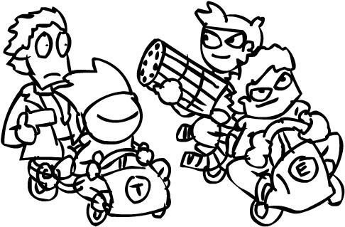
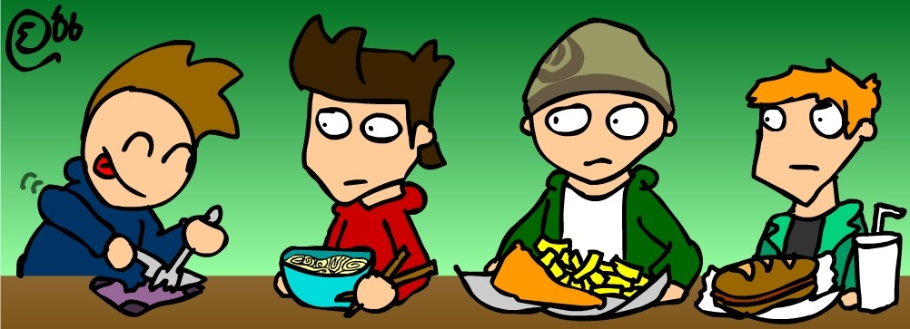
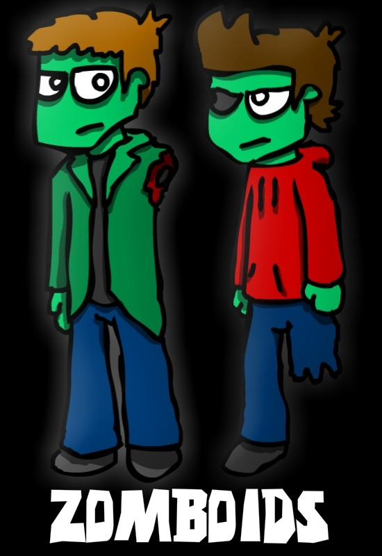
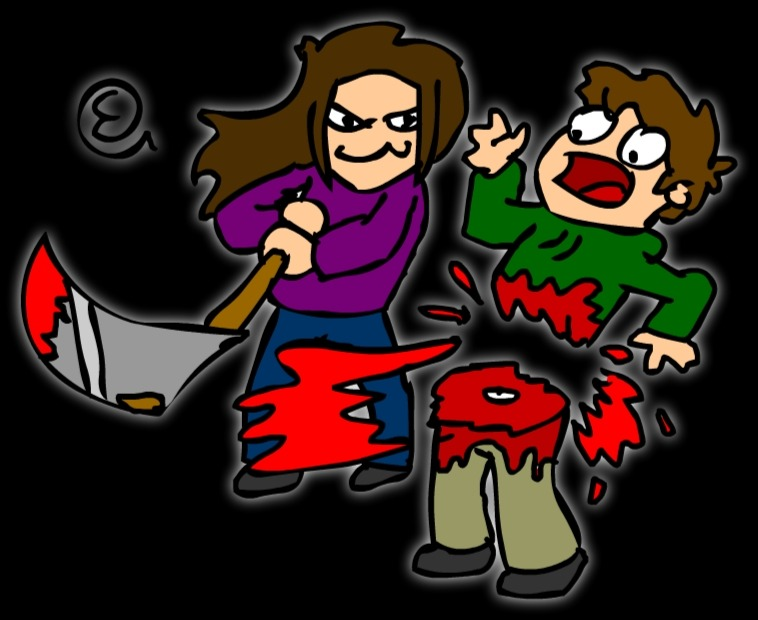
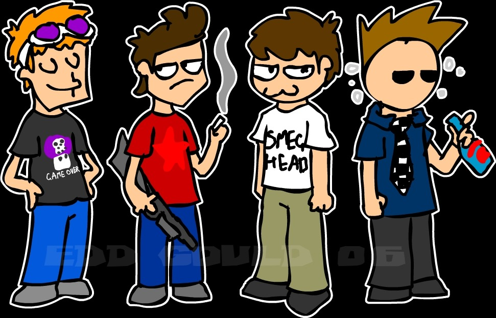
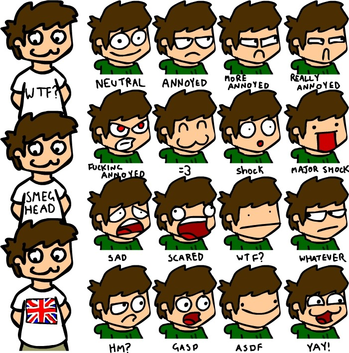

Oh god

Why is Matt's hair like.. i don't even..

SUCH DETAIL

THE PUNCHLINE WAS DEATH

The days when Tom couldn't breathe.

CopyPasteCopyPaste
Seeing as AQ’s one looked fun, here’s what i was drawing like back in 2006.